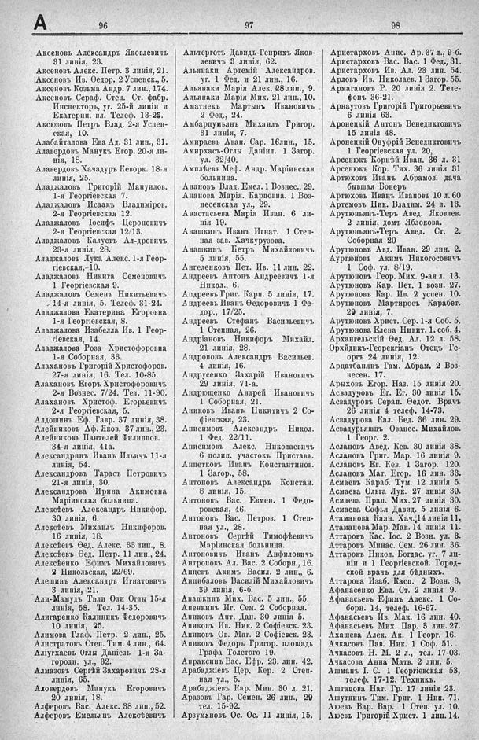

Лист источника 538
Скан

Распознанный текст
А 96 97 98
Аксеновъ Александръ Яковлевичъ
31 линія, 23.
Аксеновъ Алекс. Петр. 3 линія, 21.
Аксеновъ Ив. Ѳедор. 2 Успенск., 5.
Аксеновъ Козьма Андр. 7 лин., 174.
Аксеновъ Сераф. Степ. Ст. фабр.
Инспекторъ, уг. 25-й линіи и
Екатерин. пл. Телеф. 13-23.
Аксюзовъ Петръ Влад. 2-я Успен-
ская, 10.
Алабайталова Ева Ад. 31 лин., 31.
Алавердовъ Манукъ Егор. 20-я ли-
нія, 18.
Алавердовъ Хачадуръ Кеворк. 18-я
линія, 25.
Аладжаловъ Григорій Мануилов.
1-я Георгіевская 7.
Аладжаловъ Исаакъ Владиміров.
2-я Георгіевская 12.
Аладжаловъ Іосифъ Цероновичъ
2-я Георгіевская 12/13.
Аладжаловъ Калустъ Ал-дровичъ
23-я линія, 28.
Аладжаловъ Лука Алекс. 1-я Геор-
гіевская,-10.
Аладжаловъ Никита Семеновичъ
1 Георгіевская 9.
Аладжаловъ Семенъ Никитьевичъ
14-я линія, 5. Телеф. 31-24.
Аладжалова Екатерина Егоровна
1-я Георгіевская, 8.
Аладжалова Изабелла Ив. 1 Геор-
гіевская, 14.
Аладжалова Роза Христофоровна
1-я Соборная, 33.
Алахановъ Григорій Христофоров.
27-я линія, 16. Тел. 10-85.
Алахановъ Егоръ Христофоровичъ
2-я Вознес. 7/24. Тел. 11-90.
Алахановъ Христоф. Егорьевичуъ
2-я Георгіевская, 5.
Алдошинъ Еф. Гавр. 37 линія, 38.
Алейниковъ Аф. Яков. 37 лин., 23.
Алейниковъ Пантелей Филиппов.
34-я линія, 41а.
Александринъ Иванъ Ильичъ 11-я
линія, 54.
Александровъ Тарасъ Петровичъ
21-я линія, 30.
Александрова Ирина Акимовна
Маріинская больница.
Алексѣевъ Александръ Никифор.
30 линія, 6.
Алексѣевъ Михаилъ Никифоров.
16 линія, 18.
Алексѣевъ Ѳед. Алекс. 33 лин., 8.
Алексѣевъ Ѳед. Петр. 11 лин., 24.
Алексѣенко Ефимъ Михайловичъ
2 Никольская, 22/69.
Алешинъ Александръ Игнатовичъ
3 линія, 21.
Али-Мамудъ Тили Оли Оглы 15-я
линія, 58. Тел. 14-35.
Алигаренко Калиникъ Ѳедоровичъ
10 линія, 25.
Алимова Глаф. Петр. 2 лин., 25.
Алистратовъ Степ. Тим. 4 лин., 64.
Аліугхаевъ Оглы Даніель 1-я За-
городн. ул., 32.
Алмазовъ Сергѣй Захаровичъ 28-я
линія, 65.
Аловердовъ Манукъ Егоровичъ
20 линія, 18.
Алферовъ Вас. Алекс. 38 лин., 52.
Алферовъ Емельянъ Алексѣевичъ
Альтерготъ Давидъ-Генрихъ Яков-
левичъ 3 линія, 62.
Альянаки Артемій Александров.
уг. 1 Ѳед. и 21 лин., 16.
Альянаки Марія Алек. 28 лип., 9.
Альянаки Марія Мих. 21 лин., 10.
Аматнекъ Мартынъ Ивановичъ
2 Ѳед., 24.
Амбарцумьянъ Михаилъ Григор.
31 линія, 7.
Амираевъ Аван. Сар. 16лин., 15.
Амирхасъ-Оглы Даніил. 1 Загор.
ул. 32/40.
Амплѣевъ Меф. Андр. Маріинская
больница.
Анановъ Влад. Емел. 1 Вознес., 29.
Ананова Марія. Карповна. 1 Воз-
несенская ул., 29.
Анастасьева Марія Иван. 6 ли-
нія 19.
Анашкинъ Иванъ Игнат. 1 Степ-
ная зав. Хачкурузова.
Анашкинъ Петръ Михайловичъ
5 линія, 55.
Ангеленковъ Пет. Ив. 11 лин. 22.
Андреевъ Антонъ Андреевичъ 1-я
Никол., 6.
Андреевъ Григ. Карп. 5 линія, 17.
Андреевъ Иванъ Ѳедоровичъ 1 Ѳе-
дор., 17/25.
Андреевъ Стефанъ Васильевичъ
1 Степная, 26.
Андріановъ Никифоръ Михайл.
21 линія, 28.
Андроповъ Александръ Васильев.
4 линія, 16.
Андрусенко Захарій Ивановичъ
29 линія, 71-а.
Андрющенко Андрей Ивановичъ
1 Соборная, 21.
Аниковъ Иванъ Никитичъ 2 Со-
фіевская, 23.
Анисимовъ Александръ Никол.
1 Ѳед. 22/11.
Анисимовъ Алекс. Николаевичъ
6 полиц. участокъ Приставъ.
Анпетковъ Иванъ Константинов.
1 Загор., 58.
Антоновъ Александръ Констан.
8 линія, 15.
Антоновъ Вас. Евмен. 1 Ѳедо-
ровская, 46.
Антоновъ Вас. Петров. 1 Степ-
ная ул., 28.
Антоновъ Сергѣй Тимофѣевичъ
Маріинская больница.
Антоновичъ Иванъ Анфиловичъ
Антроповъ Ал. Вас. 2 Соборн., 16.
Анцевъ Акимъ Васил. 2 лин., 6.
Анцибаловъ Василій Михайловичъ
39 линія, 6-б.
Апашкинъ Мих. Вас. 5 лин., 55.
Апенкинъ Иг. Сем. 2 Соборная.
Апиковъ Ант. Дан. 30 линія 5.
Апиковъ Ив. Ник. 2 Софіевск. 23.
Апиковъ Ов. Маг. 2 Софіевск. 23.
Апиковъ Ѳедоръ Григор. площадь
Графа Толстого 19.
Апраксинъ Вас. Ефр. 23. лин. 42.
Арабаджіевъ Цер. Кер. 2 Степ-
ная ул., 5.
Арабаджіевъ Кар. Мин. 30 л. 21.
Аразовъ Гар. Семен. 26 лин., 29
тел. 15-92.
Арзумановъ Ос. Ос. 11 линія, 15.
Аристарховъ Анис. Ар. 37 л., 9-б.
Аристарховъ Вас. Вас. 1 Ѳед., 31.
Аристарховъ Ив. Ал. 23 лин. 54.
Арловъ Ив. Николаев. 1 Загор. 55.
Армагановъ Р. 20 линія 2. Теле-
фонъ 36-21.
Арнаутовъ Григорій Григорьевичъ
6 линія 63.
Аронецкій Антонъ Венедиктовичъ
15 линія 48.
Аронецкій Онуфрій Венедиктовичъ
1 Георгіевская ул. 20,
Арсенюкъ Корнѣй Иван. 36 л. 31
Арсенюкъ Кор. Тих. 36 линія 31
Артюховъ Иванъ Абрамов. дача
бывшая Бонеръ
Артюховъ Иванъ Ивановъ 10 л. 60
Артемовъ Ник. Владим. 24 л. 13.
Арутюньянъ-Теръ Авед. Яковлев.
2 линія, домъ Яблокова.
Арутюньянъ-Теръ Авед. Ст. 2.
Соборная 20
Арутюновъ Авд. Иван. 29 лин. 2.
Ауртюновъ Акимъ Никогосовичъ
1 Соф. ул. 8/19.
Арутюновъ Геор. Мих. 9-ая л. 13.
Арутюновъ Кар. Пет. 1 возн. 27.
Арутюновъ Кар. Ив. 2 успен. 10.
Арутюновъ Мартиросъ Карабет.
29 линія, 7.
Арутюновъ Христ. Сер. 1-я Соб. 5.
Арутюнова Елена Никит. 1. соб. 4.
Архангельскій Ѳед. Ал. 12 л. 58.
Орхидикъ-Георекгіанъ Отецъ Ге-
оргъ 24 линія, 12.
Арцатбанянъ Гам. Абрам. 2 Воз-
несен. 17.
Арыховъ Егор. Наз. 15 линія 20.
Асвадуровъ Ег. Ег. 30 линія 15.
Асвадуровъ Серап. Ѳедот. Врачъ
26 линія 4 телеф. 14-73.
Асвадурова Кал. Бед. 36 лин. 29.
Асвадурьяшцъ Ованес. Михайлов.
1 Георг. 2.
Аслановъ Авед. Кев. 30 линія 38.
Аслановъ Григ. Мар. 16 линія 9.
Аслановъ Ег. Кев. 1 Загор. 120.
Аслановъ Мат. Егор. 16 лин. 33.
Асмаевъ Караб. Тум. 12 линія 5.
Асмаева Ольга Лук. 27 линія 39.
Асмаева Прап. Мих. 27 линія 30.
Асмаева Софья Давид. 5 линія 6.
Атаманова Каян. Хач. 14 линія 11.
Атаманова Мар. Мак. 14 линія 11.
Аттаровъ Кас. Іос. 2 Возн. ул. 3.
Аттаровъ Минас. Сем. 26 лин. 36.
Аттаровъ Никол. Богдас. уг. 7 ли-
ніи и 1 Георгіевской. Город-
ской врачъ для бѣдныхъ.
Аттарова Изаб. Касп. 2 Возн. 3.
Афанасенко Евл. Ст. 2 линія 9.
Афанасьевъ Ефимъ Алекс. 1 Со-
борн. 14, телеф. 16-67.
Афанасьевъ Ив. Мак. 16 лин. 40.
Афанасьевъ Мих. Пар. 3 лин. 27.
Ахашева Алек. Ак. 1 Георг. 16.
Ачкасовъ Пав. Ник. 1 Соф. 51.
Ачкасовъ Н. М. 2 л., тел. 17-03.
Ачкасова Анна Матв. 2 лин. 5.
Ашманъ І. С. 1 Георгіевская 53,
телеф. 17-12. Техникъ.
Аштапова Нат. Гр. 17 линія 23.
Ашуткинъ Тим. Григ. 1 Ник. 71.
Аюевъ Вар. Вар. 1 Степ. ул. 10.
Аюевъ Григорій Христ. 1 лин. 14.